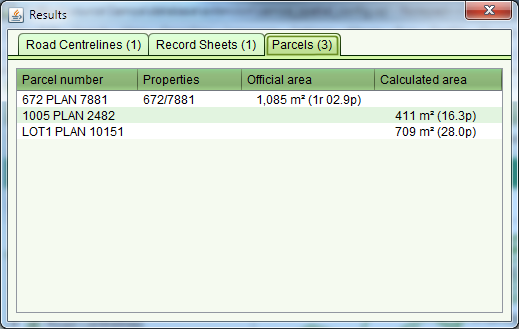

The Information Tool can be used to query geospatial features such as
parcels, roads, villages, etc. As geospatial features are often in close proximity or
overlap, the Information Tool displays details for all features immediately surrounding the
selected location. Click the appropriate tab to see details for the various layer
features.
Information Tool can be used to query geospatial features such as
parcels, roads, villages, etc. As geospatial features are often in close proximity or
overlap, the Information Tool displays details for all features immediately surrounding the
selected location. Click the appropriate tab to see details for the various layer
features.

Information Tool Results
The Information Tool also lists the official area for a parcel in both metric and imperial measures. If the parcel does not have an official area, an area is calculated from the spatial definition for the parcel. The Calculated area is indicative only and it must not be used for formal reporting of the parcel area.
The Information Tool can be used to obtain the Northing, Easting coordinates for Traverse Marks and Geodetic Marks.